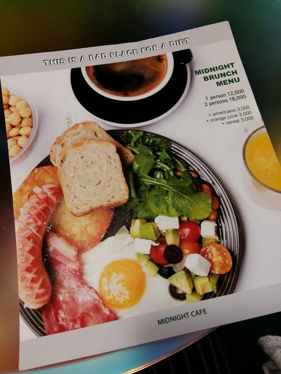
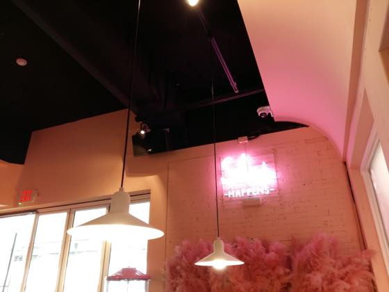
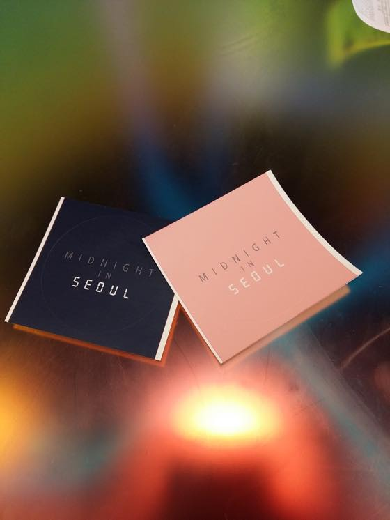
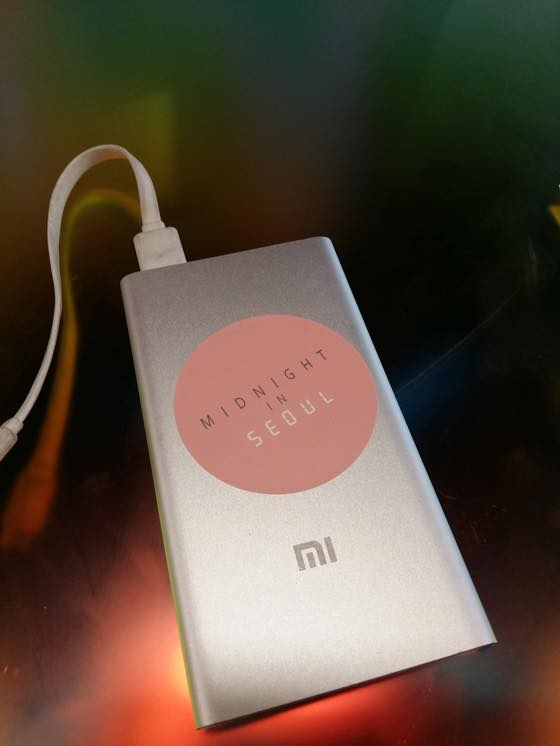
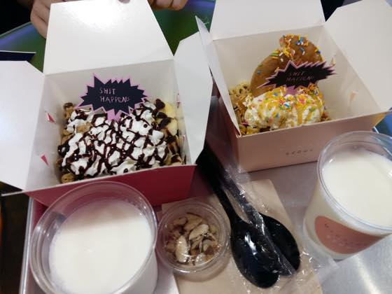
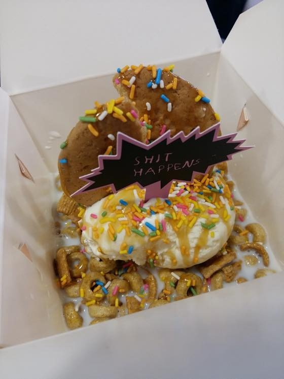

예전에 캠던(런던)에 있는 시리얼 카페에 가본적이 있는데
서울에도 시리얼카페가 있더군욤
미드나잇인서울
검색해보니 배우 윤계상 포토그래퍼 홍승현, 스타일리스트 이진규 세분이 만든 가게라 합니다 :3
왼쪽은 카페 / 오른쪽은 시리얼 바 인데
첨에 왼쪽카페 공간으로 들어가서 시리얼 메뉴가 없어서 어버버 거리고 있으니까
오른쪽가서 주문하고 카페와서 먹어도 된다고 안내해 주셨습니다 ^^

브런치 메뉴도 맛나보인다

나름 포토존이라는디 내가찍은 사진은...;;

스티커도 있습니다 :)

보조배터리에 부착

SHIT HAPPENS 문구보고 빵터짐 ㅋㅋ

가게 귀엽습니다
우유는 low fat 선택했구요
카페 메뉴중 Flat White 가 있어서 좋아라 주문했습니다 (나말고 M군이 ㅋㅋ)
담에 브런치나 토스트 메뉴 함 먹어보고 싶어용 :)